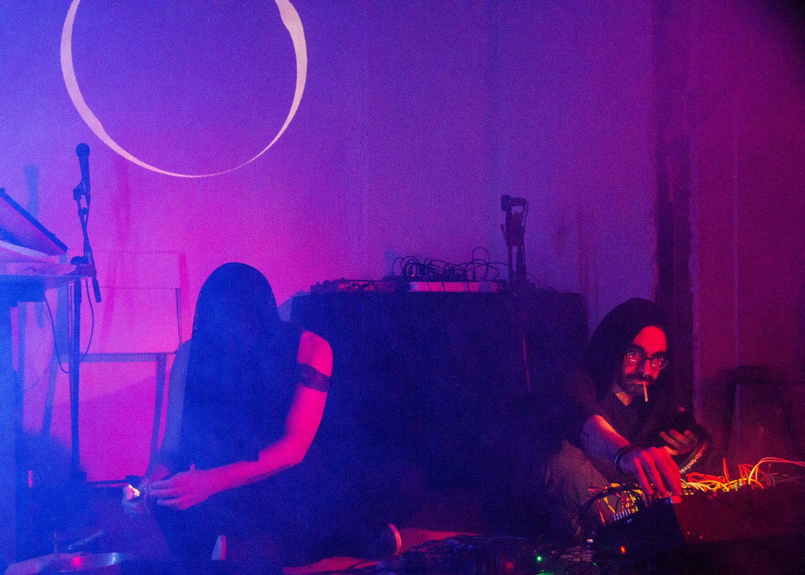
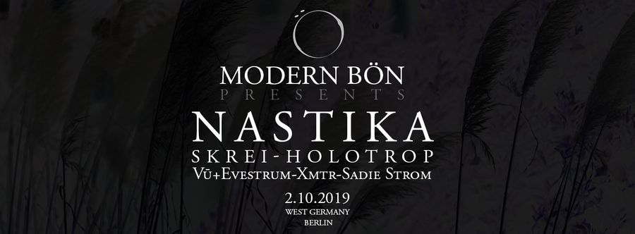
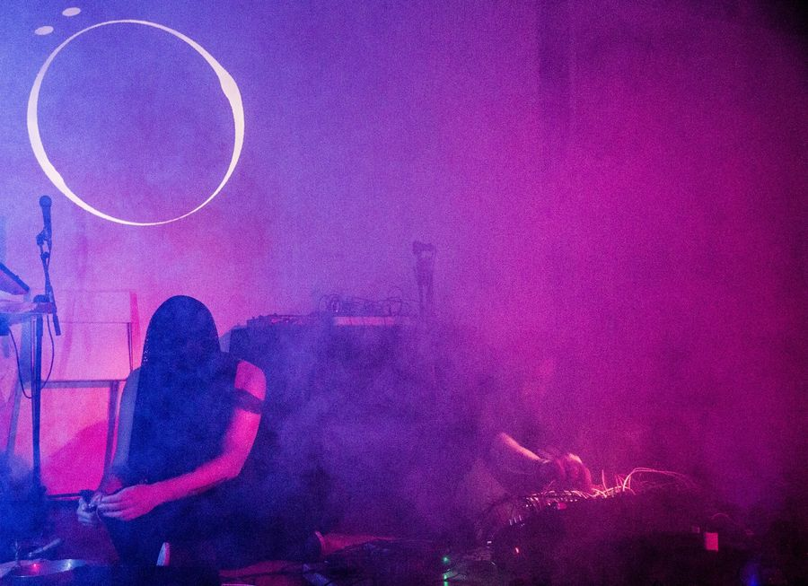
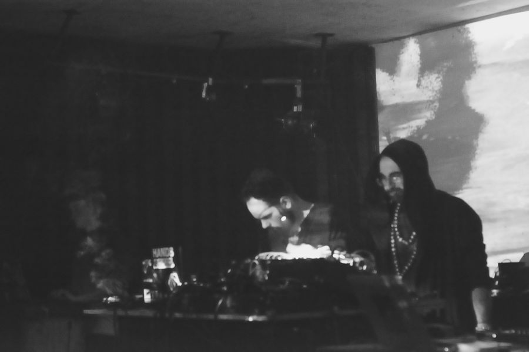
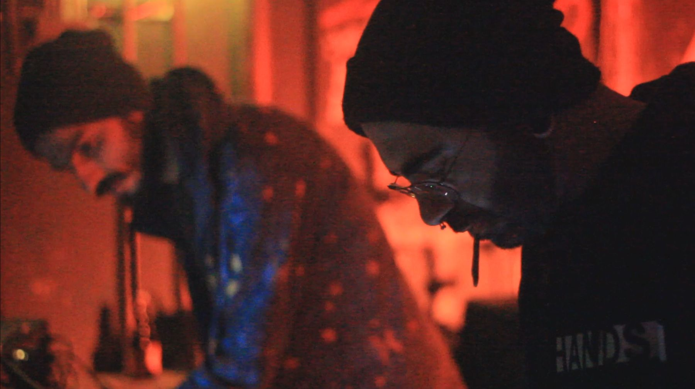

Modern Bön
Berlin experimental music collective
Modern Bön is how I entered Berlin's experimental music scene. From 2016 I contributed to the collective's projects as a performer, sound designer and event organiser, across four numbered editions and a run of label nights.
The programme sat at the ritual end of experimental music — Treha Sektori, Nastika, Phurpa, The Nent, Skrei, Visions, Templer, Blakk Harbor, Il Santo Bevitore, Implicit Surface, Espectra Negra, Nullam Rem Natam — staged in rooms chosen for their acoustics and their weight rather than their capacity.
Several of the people I still work with came out of this: Vincenzo Gagliardi (The Nent), with whom I later won the Genius Loci Weimar competition, and Francesco Della Toffola (xmtry_studio), with whom I have made Latent Spaces, Oblivion and Beacon.
- Modern Bön III17 January 2019 — Urban Spree, Berlin
- Nastika · Skrei · Holotrop2 October 2019 — West Germany, Berlin
- Modern Bön IV29 February 2020
- Solstice Gate18 September 2020 — Backsteinboot, Berlin
- AlsoTechnical A/V support at Lunchmeat Festival for The Nent, Nastika and Skrei




Credits
- RolePerformer, sound design, event organisation
- CollectiveModern Bön, Berlin
- VenuesUrban Spree · West Germany · Backsteinboot, Berlin